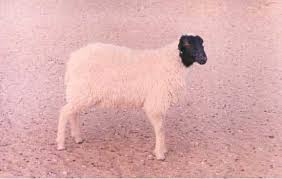
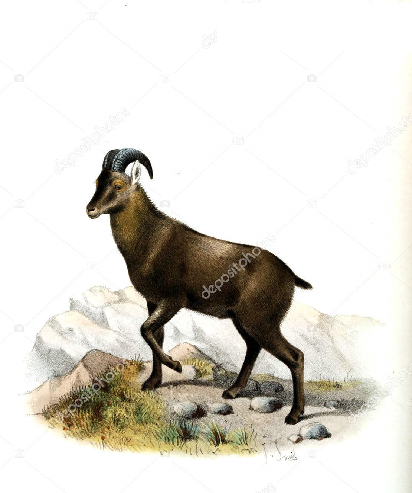
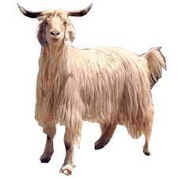
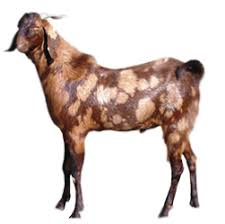
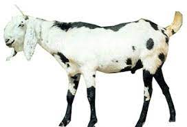

Sheep Breeds:

- Marwari: The Marwari is a small sheep, standing approximately 60 cm at the withers. It has white body and a black face. It is a polled breed - both sexes are without horns.
The Marwari is raised for its wool, which is of coarse or carpet quality. Fleeces weigh about 1.8 kg on average.

- Nilgiri: Nilgiri sheep is a breed of sheep found only in Nilgiris district of Tamil Nadu State in India. It is bred in the hilly parts of Nilgiri and known for its fine wool.
A national plan has been implemented to save the Nilgiri sheep from certain extinction is on way by National Bureau of Animal Genetic Conservation.

- Gaddi: The Gaddi ram is horned while the ewes are found horned only 10 - 15% of the time. The tail is small and thin. The breed is considered medium-sized. The Gaddi ewe averages 56 cm at the withers and weighs on average 26.5 kg.
Lambs at birth weigh 2.5 kg and there is no difference in average birth weight between rams or ewes. This breed is small in size. It is strong and a good climber.
Goat Breeds:

- Surti: The Surti is an Indian breed of goat, from the state of Maharashtra. Its yield of milk and meat is very low: gives an average of 178 litres
of milk in a lactation averaging 166 days. Kids reach a weight of about 23 kg in the first year of life.

- Beetal: The Beetal goat is a breed from the Punjab region of India and is used for milk and meat production.
It is considered to be a good milker with large body size. The skin of these goats is considered to be of high quality because of
its large size and its yielding of fine leather for manufacturing clothes, shoes,
and gloves. These goats are also adapted to stall feeding, thus are preferred for intensive goat farming.

- Boer: The Boer goat was probably bred from the indigenous South African goats kept by the Namaqua, San, and Fooku tribes, with some crossing of Indian and European bloodlines being possible.
They were selected for meat rather than milk production; due to selective breeding and improvement, the Boer goat has a fast growth rate and excellent carcass qualities, making it one of the most popular breeds of meat goat in the world.